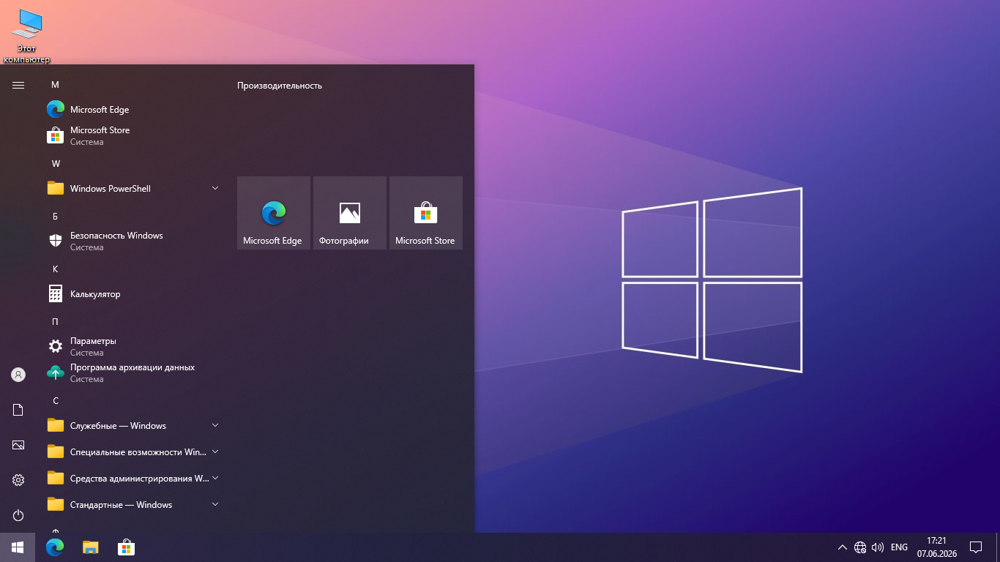

ClearifyOS 10 22H2
Дата выхода: Июнь 2026 | Размер ISO: 3,90 ГБ (4 193 189 888 байт)
SHA-256: 001fbac1d19066417f8bcc03693eb6bde84d83b8be0507c9e548263fda31919e

Выпиленный софт и компоненты:
Распознавание речи
Xbox
Поиск Bing
Cortana
Центр отзывов
Справка Windows
Groove Music
Почта и Календарь
Люди
Microsoft Solitaire Collection
Заметки
Портал смешанной реальности
Кино и ТВ
MSN Погода
Office
OneNote
Paint 3D
Skype
Будильники и Часы
Камера
Карты Windows
Диктофон
Связь с телефоном
Подсказки
Средство 3D просмотра
Telnet & TFTP
Skype ORTC
Платформа гипервизора (Hyper-V, WSL)
Демонстрационный контент для розницы
SmartScreen
Родительский контроль
Экранный диктор
OneDrive
Инсайдерский центр Windows
Телеметрия
Важное предупреждение:
⚠️ Внимание: На рабочем столе лежит папка ClearifyOS. В ней находятся установщики Chrome и Firefox, оригинальные обои (если те, что в сборке не нравятся), установщик VLC Media Player и скрипт активации через slmgr. Если вам ничего не нужно из этой папки, просто удалите её и продолжите пользоваться сборкой.
Отказ от ответственности: Сборка предоставляется "как есть". Автор (ClearifyOS) не несет ответственности за потерю данных, сбои в работе оборудования или несовместимость специфического программного обеспечения. Все модификации производились с использованием NTLite исключительно в целях оптимизации личного использования. Используя данную сборку, вы берете все риски на себя.